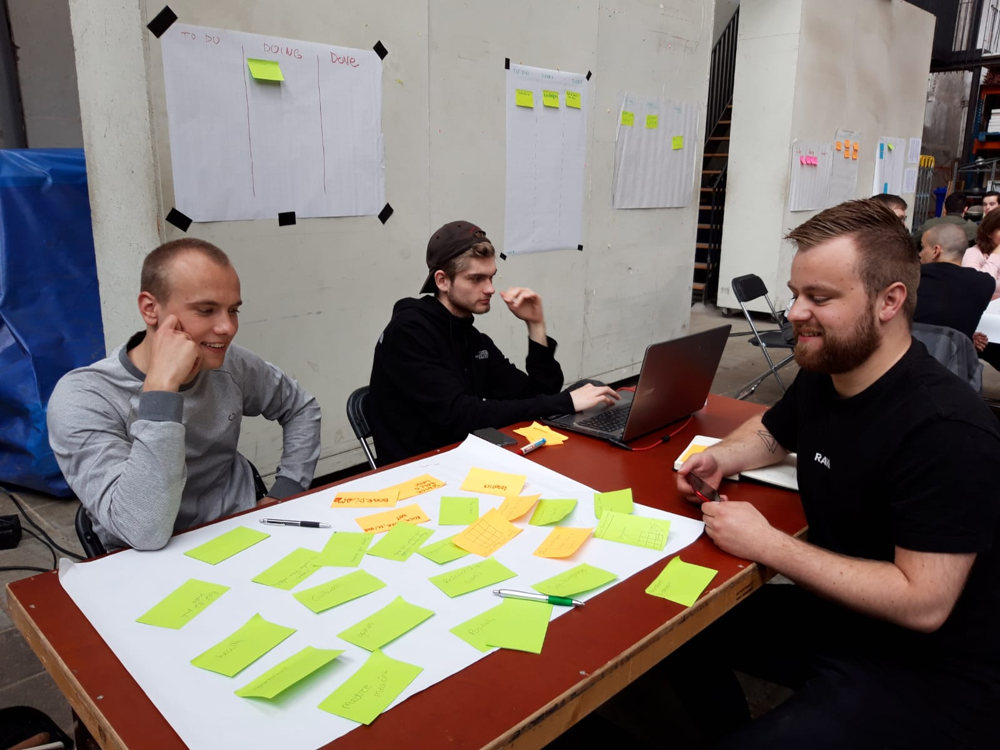
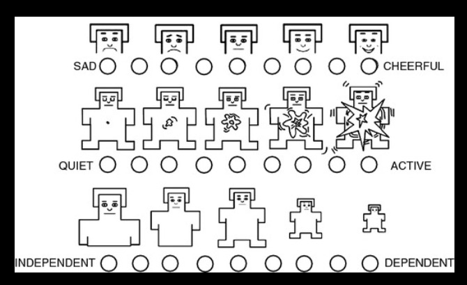
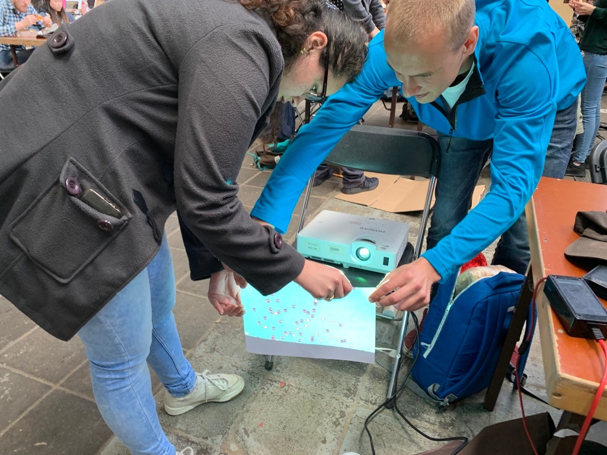
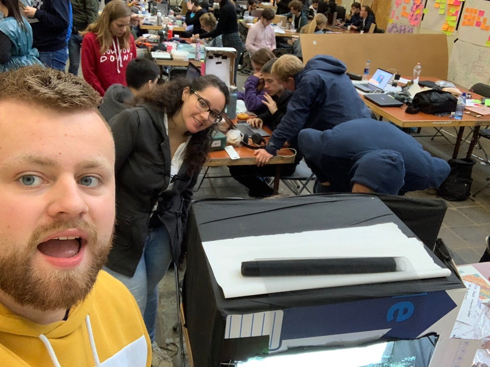
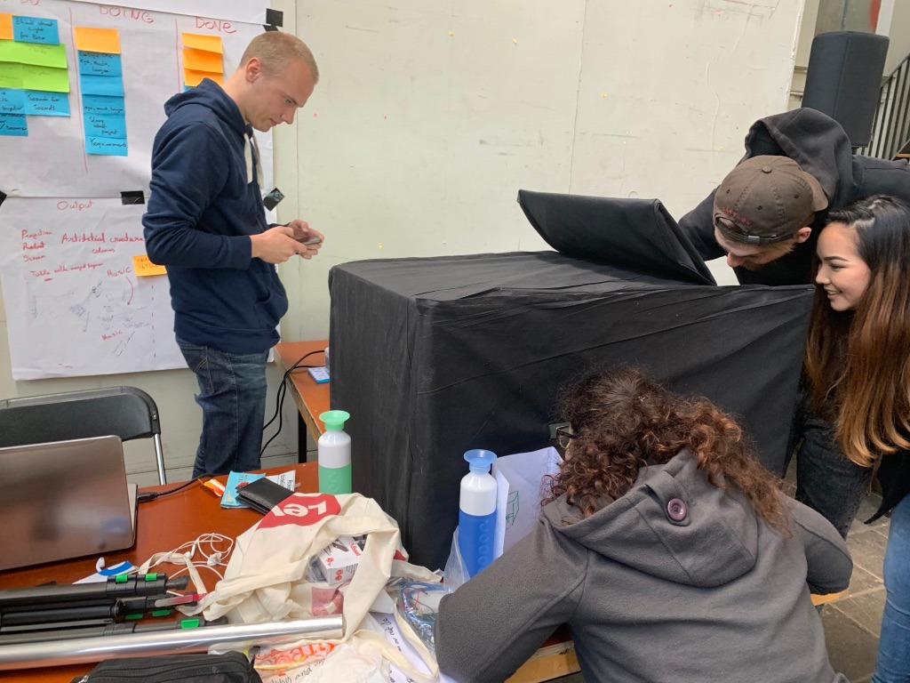
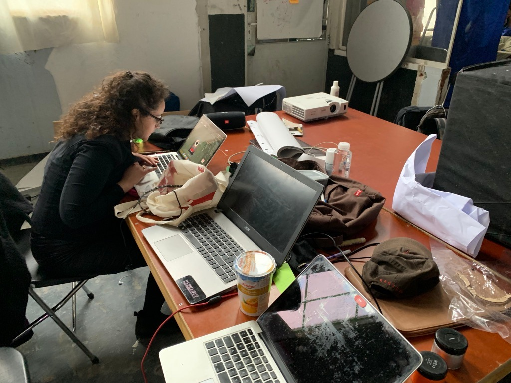
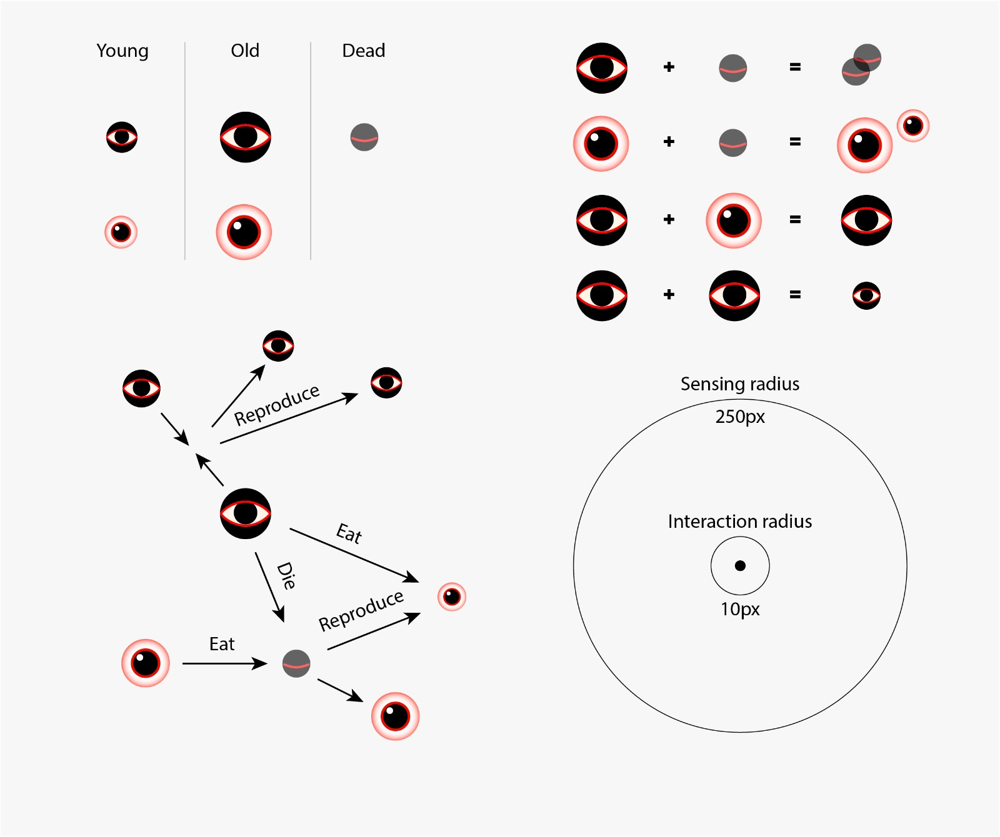
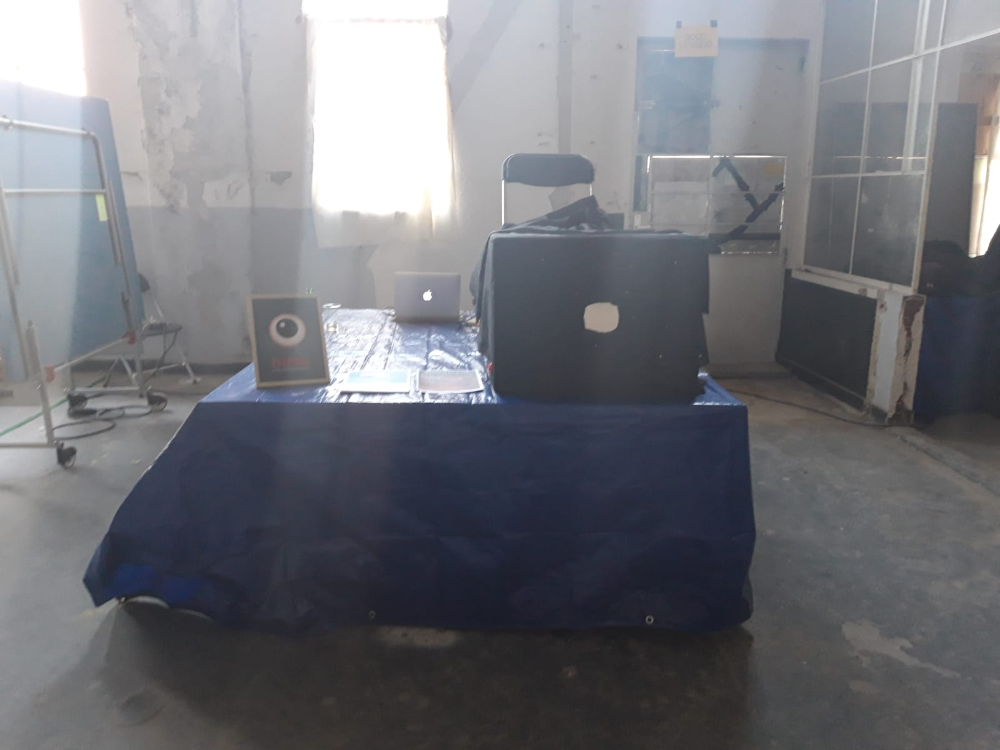
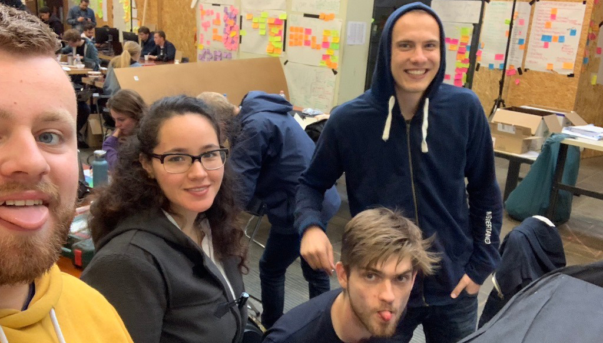

LAB & Product
AanleidingDit is het laatste blok van het jaar, het gaat allemaal even anders dan normaal. Als eerst hebben wij zes weken normale lesweken, vervolgens zijn wij de laatste twee weken van het blok, naar een speciale locatie toe te gaan voor de HCI lab weken. Wij hadden de keuze om uit vier onderwerpen te kiezen: Wearebles, Playful Interaction, Artificial creatures en Virtual Reality and Augmented Reality.
DoelHet doel van deze twee weken is dat er een interactief systeem wordt gemaakt. Dit wordt gezamenlijk gedaan met een projectgroep. Aan het einde van deze twee weken wordt er een expositie gehouden. Hierbij worden velen verschillende mensen uit het werkveld voor uitgenodigd, daarnaast hebben wij ook de mogelijkheid om onze familie en vrienden uit te nodigen. In het onderstaande wordt er dagelijks een samenvatting gemaakt, over de taken die dagelijks gedaan worden. De studenten zijn van twee verschillende studies: CMD (Communication and Multimedia Design) en UX (User Experience Design). De studenten van User Experience Design zijn studenten vanuit de hele wereld, vandaar dat Engels de voertaal zal zijn. Minimaal zitten er twee internationale studenten in een groep.
Maandag
3 juniAls eerst hebben wij een introductie gehad over hoe de aankomende twee weken zullen verlopen. Vervolgens kennis gemaakt met mijn projectgroep Martin (UX-student), Karolis (UX-student) en Tim (CMD-student). Onze groep kreeg het onderwerp ‘artificial creatures’. We zijn begonnen met brainstormen. Hierbij hebben wij alleen onze interesses opgeschreven, allen hadden we een hele andere kijk, hoe wij het onderwerp wilde benaderen. Mijn interesse was om een ontwerp te maken voor de maatschappij, vandaar da tik onderwerpen heb geschreven zoals: gezondheid, gebarentaal, relaties, cultuur etc. Mijn klasgenoten hadden andere soorten interessante ideeën. Een voorbeeld hier van is: sensor based games, space, gym put hand on it etc. Vandaag heb ik voornamelijk geprobeerd om veel verschillende ideeën te bedenken.Ik merkte dat ik aan het begin erg in mijn comfort zone bleef, maar naarmate dat mijn projectgenoten hun ideeën vertelde, kon ik ook mee doen op een andere level.
 Eerste brainstormsessieDinsdag
4 juniAls eerst zijn wij de dag begonnen met een stand-up. Vervolgens zijn wij verder gegaan met ideeën divigeren, wat wij de voorgaande dagen hadden bedacht. Deze ideeën hebben we vervolgens geprobeerd om samen te voegen en te visualiseren (schetsen). Iedereen heeft verschillende ideeën betreft het project. Vervolgens hebben wij de eerste presentatie spreker Vincent Lindeboom (Creativie produceer), heeft voornamelijk gesproken over het bedrijf Radio Radio. Helaas, ben ik halverwege de presentatie weggegaan, omdat ik mijn Nederlandse toets had. Mijn klasgenoten waren gebleven en hebben een aantal ideeën besproken met de studentassistent.
Woensdag
5 juniVandaag zijn wij direct begonnen met een stand-up, wij kregen hier maximaal 20 minuten voor. Hierbij hebben mijn projectgenoten ons toegelicht wat zij op dinsdag hadden gedaan. Vervolgens hebben wij besproken wat we de aankomende dag gingen doen. Na de stand up kregen wij een presentatie van Dr. ir D.J. Broekens. Hij heeft een presentatie gegeven over Robotics and emotions. Het onderwerp vond ik direct interessant en wilde daar graag meer over weten. Dit heeft mijn klasgenoot en mij geinspereerd om verder na te denken over emoties, wat komt hier bij kijken. Wij zijn op verschillende dingen uitgekomen. Ik ging mij voornamelijk focussen op de lichaamstaal van de mensen. De resultaten wil ik meenemen naar ons project. Wij hebben nog geen concreet concept, maar wel richtlijnen waar wij ons aan willen houden.
Donderdag
6 juni
Vandaag zijn we zoals gewoonlijk begonnen met de stand up. De stand up duurde ditmaal 15 minuten. Elke dag wordt de stand up korter, zodat wij leren om snel goed te communiceren in een groep. Het is belangrijk om concreet te communiceren:
- Wat het doel is voor de dag
- Waar is er gister aan gewerkt
- Waar loop je tegen aa.
Vandaag was de spreker Teun Verkerk aanwezig en heeft gesproken over verschillende projecten. Voornamelijk heeft die gesproken over de creatures, die hij heeft geproduceerd samen met zijn team. Ik vond het een interessante presentatie. Dit omdat hij voornamelijk aangaf dat hij niet met een probleemstelling is begonnen voor de creatures. Hij heeft velen voorbeelden gegeven. Hij laat ook zien, dat hij naar andere landen is geweest en hoe ze op de creatures reageerde. Het bijzondere was dat ze in ieder land anders reageerde op de creatures. De creatures zien er bijzonder uit en maken een speciaal geluid. Er zit geen bepaalde algoritme in de creatures, waardoor elk moment van de dag een geluid kunnen maken.
Vrijdag
7 juniElke dag wordt de stand up korter, zodat wij leren om snel goed te communiceren in een groep. Het is belangrijk om concreet te communiceren. We hebben een presentatie gehad van Marcello Gómez Maureira dit ging over Playful interaction. Hij heeft een aantal dingen verteld van zijn eigen projecten daarnaast is hij werkzaam bij de Universiteit Leiden en is zelf een PHD student. Hij heeft het voornamelijk gehad, wat voor elementen belangrijk zijn in een spel. Wat leuk was bij zijn presentatie, is dat hij interactie had met de studenten. Hij vroeg ons velen verschillende vragen, waarvan wij de antwoorden moesten zeggen. Als voorbeeld had hij een game meegenomen, waar velen elementen in zaten. Het bijzore was, dat de gebruiker bijvoorbeeld niet door deuren hoefte heen te lopen, maar dit kon ook gewoon door ramen. Naast dat hij over het onderwerp Playful Interaction heeft gesproken, heeft hij het gehad over Master studie Media Technology. Het klonk super interessant. Het klonk als een uitbreiding van CMD, maar met meer aspecten van kunst. Vandaag heb ik mij bezig gehouden om alle informatie door te geven, die nodig waren voor de expositie dag.
Ik heb mij voornamelijk gefocust op het onderdeel desk-research. De presenatie heeft mijn klasgenoot en mij geinspireerd om de emoties en het lichaamstaal van de mens te bestuderen. Een van de ideeën waren om creatures te creeëren die gelijkenissen had aan de mens. Hier hadden wij voor gekozen, omdat een persoon zich in de meeste gevallen wil kunnen identificeren met een creatie. Het doel was voornamelijk dat de creaties herkenbaar waren voor de persoonen. Mijn klasgenoot en ik hebben veel verschillende creatures geprobeerd te creeëren: vormen, monsters, dieren, lichaamsdelen etc. Daarnaast heb ik gekeken naar welke doelen haalbaar waren.
13 juni Dinsdag
11 juniDinsdag weer nieuwe frisse start van de week. Bij de stand up, was al te merken dat iedereen toch nog dingen had bedacht voor het project. Ook ik had er over nagedacht, hoe en wat we konden doen. Toch vond ik dat we bepaalde beslissingen toch moesten maken. Ik heb een lijst gemaakt, met de onderwerpen waar we een keuze over moesten maken. Vervolgens hierover gediscuseerd met mijn projectgenoten. We gingen voornamelijk na denken hoe we de sfeer voor de gebruiker het beste konde maken. Een donkere kamer, wel of niet een doos. Een beamer, groot of toch klein afbeelden. Daarnaast moesten we beginnen te kijken welke logica onze creatures gaan toepassen. Dagelijks probeer ik wel foto's en video's te maken, om een goed overzicht te creeeren voor de video later. Daarnaast heb ik een story gemaakt voor ons concept. Het is uiteindelijk een goede story geworden, echter hebben we niet alle onderdelen hier uit gebruikt.
Woensdag
12 juniVandaag zijn we verder gegaan met de logica van de creatures. Het onderdeel programmeren doe ik niet. Toch heb ik mij er in willen verdiepen, zodat ik goed weet hoe alles functioneert. Mijn projectgenoot heeft mij verteld hoe de code werkt. Hiervan heb ik het meeste begrepen. Helaas liep hij vast bij een onderdeel, ik heb hem hierbij geprobeerd te helpen. Helaas is dat niet volledig gelukt. Samen met mijn projectgenoot hebben we de doos gemaakt waar in de creatures komen. We proberen zo veel mogelijk, dat het een eigen wereld wordt. Ons concept goed beschreven en waar wij voorstaan. Vervolgens naar de Gamma geweest om nieuwe producten te halen.
Donderdag
Donderdag zat de stress er goed in bij iedereen, vooral omdat we allemaal goed willen preseteren. De doos is niet goed in elkaar gezet. Het is nog steeds niet duidelijk hoe we het gaan neerzetten. Daarnaas toch nog advies gevraagd aan de lerares, ze heeft nog een aantal voorbeelden gegeven. Dit vervolgens voorgesteld aan ons groep. Vandaag moesten we alles bij elkaar ruimen. Jammer genoeg stonden we niet op de plek waar we hadden aangegeven. Toch gaan we er iets goeds van maken. We waren van plan om alles zo donker mogelijk te maken, helaas was het nu niet mogelijk. Daarnaast heb ik mij ingelezen hoe je verschillende buttons kan maken voor op een product.
Vrijdag
14 juniVandaag de laatste dag, we moesten nog een aantal dingen doen. We wilde de bezoekers voorbereiden op wat zij eventueel kon verwachten. Vandaar dat ik een poster heb gemaakt met een creature. Vervolgens ben ik gaan na denken hoe we de doos het beste kunnen neerzetten, zodat het toegelijk was voor verschillende gebruikers (kinderen, ouderen, leraren en familie). Daarnaast heb ik een aantal visual gemaakt voorop de button.
 Expositie De expositie was onzettend leuk! Aan het begin merkte ik dat het lastig vond om het concept uit te leggen. Constant werd ik er beter in. En merkte ik dat ik het steeds leuker vond. Vooral wanneer de bezoekers direct begrepen wat het doel was van onze game. Ik merkte dat sommige mensen het ontzettend leuk vonden en de andere neutraal. Het leukste vond ik als kinderen het leuk en erg nieuwschierig waren en meteen aan de slag wilde.Daarnaast vond ik het fijn dat ik aan een mevrouw kon uitleggen, wat het doel is van de creatures. Als eerst zij ze dat ze niet wilde, omdat ze niet gewend was om te gamen. Toch heb ik mjn verhaal gedaan. toen durfte ze het toch aan. Toen kon ze niet meer stoppen met lachen. En ik merkte dat mijn projectgenoot en ik daaar super blij van werden. Omdat het toch een goed gevoel heeft gegeven bij mensen, en daar haal ik mijn voldoenig uit.
 EYEPOOL Proces
EYEPOOL Proces
Introductie
Als onderwerp is er gekozen voor Artificial Creatures. Sommige projectgenoten hadden gekozen voor het onderwerp Playful Interaction. Dit was voor ons een kans om gedeeltelijke combinatie te maken. Het hoofonderwerp was: artificial creatures. Een van onze hoofdoelen was, om een gehele andere wereld te maken. Waar 'de mens' invloed over heeft.We wilde het zo gek en vreemd mogelijk maken. Vandaar dat wij ook kozen hebben voor de belofte: we promise you another level of weirdness.
ProductOns onderwerp is artificial creatures. Wij wilde vanaf het begin al een 'andere wereld creeeren'. Soort van een ander dimensie. In deze wereld zijn verschillende creatures met verschillende leeftijden (jong, oud) ze zijn levend of. De creatures reproduceren, eten, of ze gaan dood. Ons voornamelijk doel was, dat zij een eigen systeem hebben. En dat de gebruiker hier macht over heeft. Het product is een doos, waar je de andere dimensie ziet. Door middel van een kijkgat. De gebruiker heeft invloed omdat creatures kan creeeren. De creatures kunnen vervolgens elkaar opeten en ze kunnen reproduceren.
Wanneer de zwarte creatures tegen elkaar aankomen dan reproduceren zij een nieuw creature (eye). Wanneer de zwarte en de witte creatures tegen elkaar aankomen dan eet de zwarte creature de witte op. Wanneer de zwarte creature uiteindelijk dood gaat, is dit goed nieuws voor de witte creatures. De witte creatures kunnen de corpussen eten van de zwarte creatures.
 Beschrijvijng proces  Beschrijvijng proces Beschrijvijng proces
Beschrijvijng proces
Reflectie
Dit college blok kan ik met een tevreden blik terug kijken. Ik heb veel nieuwe kennis opgedaan over verschillende thema's binnen het vakgebied van Technologie. Daarnaast heb ik veel nieuwe vriendschappen opgebouwd. De lab-weken zag ik als een uitdaging, met geheel nieuwe mensen aan het werk gaan. Teamgenoten met verschillende achtergronden en verschillende meningen en manier van project aanpak. Dit maakte juist voor mij de HCI-weken zo bijzonder. Alles was nieuw en anders. Tijdens de lab-weken heb ik aan mijn Engels kunnen werken en daarnaast heb ik leren samenwerken met mijn teamgenoten. Wat ik erg lastig vond is, wanneer ik een idee heb, om het op een goede duidelijke manier uit te leggen. Dit vind ik al erg lastig in het Nederlands, dus het was een extra uitdaging om dit in het Engels te doen. Ik vond het leuk om samen te brainstormen met mijn teamgenoten, zij bekeken situaties vanuit een ander perspectief, waardoor ik ook op een andere manier moest leren denken. Ons team had vaak velen verschillende goede ideeën, echter wanneer het niet lukte, bleven we er onbewust lang mee zitten. Voor de volgende keer hoop ik dat ik sneller knopen kan door hakken, waardoor we minder tijdsverlies zullen hebben. Door het vak HCI is mijn motivatie vergroot voor mijn studie en om doelgericht te werk te gaan. In de toekomst hoop ik een baan te vinden die maatschappij helpt, waarbij de combinatie mens en technologie kan maken.
